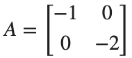
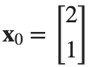
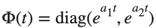
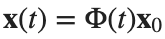
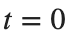
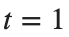

Control Engineering 1 · Week 06 · State Transition과 시스템 응답
본인 사본에서 코드와 작성란을 직접 수정하세요. 이름: ⟦직접 입력⟧ / 학번: ⟦직접 입력⟧
실행 방법
Live Editor에서 코드 안을 클릭하고 Run Section으로 현재 Section을 실행하세요(Windows/Linux Ctrl+Enter, Mac ⌘+Enter). Run은 문서 전체를 실행합니다. 설명·작성란은 직접 편집하세요.
처음에는 위에서부터 실행하고, 값을 바꾼 Section은 다시 실행하세요. 변수가 없다는 오류가 나면 앞 Section부터 실행하세요. 출력은 코드 아래 또는 오른쪽에 표시됩니다.
환경: MATLAB Online과 Control System Toolbox.
1. State Transition 계산
아래 계산을 먼저 수행한 뒤 MATLAB 결과와 비교하세요.
- 아래 일반 모델을 실행하기 전에

,
, 인 간단한 경우를 손으로 계산하세요. - 대각행렬에서는

입니다. - 와

를 기호식으로 쓰고
에서 초기값이 되는지 확인하세요. - 전체 응답 식에서 초기 State에 의한 항과 Input에 의한 적분항을 표시하고, 여기서 어느 항이 0인지 설명하세요.

의 값은 지수함수 형태로 둔 뒤 손계산에 사용한 모델을 별도 변수 A_check=diag([-1 -2]), x0_check=[2;1]로 지정하고 expm(A_check)*x0_check와 대조하세요.- 이 계산을 첫 코드 Section의 기준 예측으로 사용하세요.
코드 실행 전 — 손으로 계산한 식과 값: ⟦여기에 계산을 적으세요⟧
코드 실행 후 — 비교할 MATLAB 출력값: ⟦출력값을 적으세요⟧
2. State Transition Matrix
수식의 e^{At}는 MATLAB에서 expm(A*t)로 계산합니다. t=0에서는 시간이 지나지 않았으므로 처음 State가 그대로 유지되어야 합니다. 따라서 Phi(0)은 Identity Matrix이며, 아래 코드는 이 조건을 확인합니다. 이름이 비슷한 exp는 각 원소에 지수함수를 따로 적용하므로, 여기서 expm 대신 쓰면 다른 결과가 나옵니다.
실행 전 예상: ⟦직접 입력⟧
A=[0 1;-2 -3];
Phi=expm(A*.5);disp(Phi);
assert(norm(expm(A*0)-eye(2))<1e-12);
disp(norm(Phi-exp(A*.5)));
직접 수행:
- 첫 코드 Section의 같은 A에서 의 Phi=expm(A*t)를 구해 행렬을 기록하세요.
- norm(expm(A)-expm(A*0.5)*expm(A*0.5))를 구해 잔차를 기록하세요. 이 값이 0에 가까운지 보고 와 대조합니다.
- 같은 에서 계산한 Phi-exp(A*0.5)와 연결해, State Transition에 exp 대신 expm을 쓰는 이유를 설명하세요.
% ✍ 직접 작성: 아래에 본인 코드를 추가하세요.
바꾼 조건: ⟦직접 입력⟧
실제 결과: ⟦직접 입력⟧
예상과 차이 및 원인: ⟦직접 입력⟧
3. State Trajectory 비교
State 각각의 단위를 표시합니다.
실행 전 예상: ⟦직접 입력⟧
A=[0 1;-2 -3];x0=[1;0];t=0:.02:5;X=zeros(2,numel(t));
for j=1:numel(t),X(:,j)=expm(A*t(j))*x0;end
figure;subplot(2,1,1);plot(t,X(1,:));ylabel('Position (m)');grid on;
subplot(2,1,2);plot(t,X(2,:));ylabel('Velocity (m/s)');xlabel('Time (s)');grid on;
직접 수행:
- 같은 A와 시간축에서 Initial State를 [1;0]에서 [0;1]로 바꾸어 X를 다시 계산하세요.
- Position X(1,:)와 Linear Velocity X(2,:)의 그림에 변경 전후 곡선을 각각 표시하세요. 범례에는 Initial State를 적으세요.
- Position의 초기값이 0이어도 이후 값이 변하는 이유를 Linear Velocity의 초기값과 연결해 설명하세요.
% ✍ 직접 작성: 아래에 본인 코드를 추가하세요.
바꾼 조건: ⟦직접 입력⟧
실제 결과: ⟦직접 입력⟧
예상과 차이 및 원인: ⟦직접 입력⟧
4. 전체 응답의 분해
같은 Input·Output·시간축으로 비교합니다.
실행 전 예상: ⟦직접 입력⟧
sys=ss([0 1;-2 -3],[0;1],[1 0],0);t=(0:.01:8)';u=ones(size(t));x0=[1;0];
yTotal=lsim(sys,u,t,x0);yInitial=initial(sys,x0,t);yInput=lsim(sys,u,t);
err=max(abs(yTotal-yInitial-yInput));disp(err);assert(err<1e-8);
figure;plot(t,[yTotal,yInitial,yInput]);legend('total','initial','input');grid on;
직접 수행:
- ‘전체 응답의 분해’ 코드에 정의된 sys,t를 사용해 다음 두 경우를 각각 계산하세요.
- 입력 u=2*ones(size(t)), 기준 Initial State x0=[1;0].
- 입력 크기 2를 유지한 u=2*ones(size(t)), Initial State x0=[0;1].
- 각 경우에 전체 출력 lsim(sys,u,t,x0), Initial State에 의한 출력 initial(sys,x0,t), 입력에 의한 출력 lsim(sys,u,t)를 구하세요.
- max(abs(yTotal-yInitial-yInput))를 기록하고, 세 출력의 관계를 설명하세요.
- 입력만 두 배로 한 경우의 전체 출력을 기준 전체 출력의 두 배와 대조하세요. Initial State에 의한 출력도 두 배가 되는지 구분해 판단하세요.
% ✍ 직접 작성: 아래에 본인 코드를 추가하세요.
바꾼 조건: ⟦직접 입력⟧
실제 결과: ⟦직접 입력⟧
예상과 차이 및 원인: ⟦직접 입력⟧
반복 숙달과 제출 전 확인
앞의 직접 수행에서 비교한 조건 세 가지를 아래에 정리하세요. 이미 수행한 실험을 추가로 반복할 필요는 없습니다. 예상은 정확한 수치 대신 증가·감소 방향으로 적어도 됩니다.
반복 1 — 조건: ⟦직접 입력⟧ / 예상: ⟦직접 입력⟧ / 실제: ⟦직접 입력⟧
반복 2 — 조건: ⟦직접 입력⟧ / 예상: ⟦직접 입력⟧ / 실제: ⟦직접 입력⟧
반복 3 — 조건: ⟦직접 입력⟧ / 예상: ⟦직접 입력⟧ / 실제: ⟦직접 입력⟧
선택:
예: Initial State를 행벡터로 넣은 경우
- 첫 코드 Section의 같은 A에서 expm(A*0.5)*[1 0]을 별도 줄로 시험하고, 두 행렬의 크기와 오류 메시지를 기록하세요.
- Initial State만 열벡터 [1;0]로 바꾸어 계산하세요. 결과의 두 성분을 적고 잘못된 입력 줄은 수정된 줄로 대체하세요.
코드, 실제 Output·그래프, 직접 작성한 해석을 포함하세요. 제출은 KLAS를 이용하며 기한은 학기 일정과 최신 공지를 확인합니다.
파일명: 이름_학번_6주차.mlx.